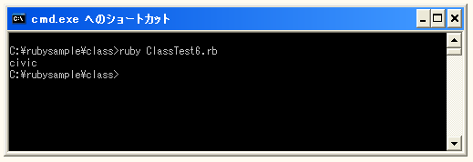

アクセスメソッド
クラスの中で使われているインスタンス変数はクラスの外からは参照したり値を変更したりすることが出来ません。参照する場合も変更したい場合もインスタンスメソッド経由して行う必要があります。
例えば次のようなインスタンスメソッドを用意しておくことでオブジェクトを経由してインスタンス変数の値を取得したり変更したりすることが出来ます。
class Car
def initialize(carname="未定義")
@name = carname
end
def getName()
return @name
end
def setName(newName)
@name = newName
end
end
car = Car.new()
car.setName("civic")
print(car.getName())
このようにメソッドを定義する事でオブジェクトからインスタンス変数の参照や更新が行えますが多くのインスタンス変数がある場合はメソッドを定義するだけでも大変です。そこでインスタンス変数への参照や更新が簡易的に行えるようにアクセスメソッドと呼ばれるものが用意されています。
用意されているアクセスメソッドは次の3つです。
| 定義式 | 機能 |
|---|---|
| attr_reader :変数名 | 参照が可能 |
| attr_writer :変数名 | 更新が可能 |
| attr_accessor :変数名 | 参照と更新が可能 |
使い方は次のようになります。
class Car
def initialize(carname="未定義")
@name = carname
end
attr_accessor :name
end
上記のように対象となるインスタンス変数名に対して「attr_reader」「attr_writer」「attr_accessor」のいずれかを使って上記のように記述することでインスタンス変数の参照や更新用のメソッドを個別に定義する代わりとなります。
その為、上記のように記述した場合は更新も参照も行える設定となります。具体的には次のように記述します。
class Car
def initialize(carname="未定義")
@name = carname
end
attr_accessor :name
end
car = Car.new()
car.name = "civic"
print(car.name)
「オブジェクト名.変数名」で参照したり更新したりが直接行えます。(クラス外からインスタンス変数が直接操作できるようになったわけではなく、参照や更新が行えるメソッドが自動的に作成されたと考えて下さい)。
今回は「attr_accessor」を使いましたので更新も参照も可能です。「attr_reader」を使った場合は参照のみ可能で「attr_writer」を使った場合は更新のみが可能となります。
サンプルプログラム
では実際に試してみます。
class Car
def initialize(carname="未定義")
@name = carname
end
attr_accessor :name
end
car = Car.new()
car.name = "civic"
print(car.name)
上記を実行すると次のように表示されます。

( Written by Tatsuo Ikura )

著者 / TATSUO IKURA
初心者～中級者の方を対象としたプログラミング方法や開発環境の構築の解説を行うサイトの運営を行っています。